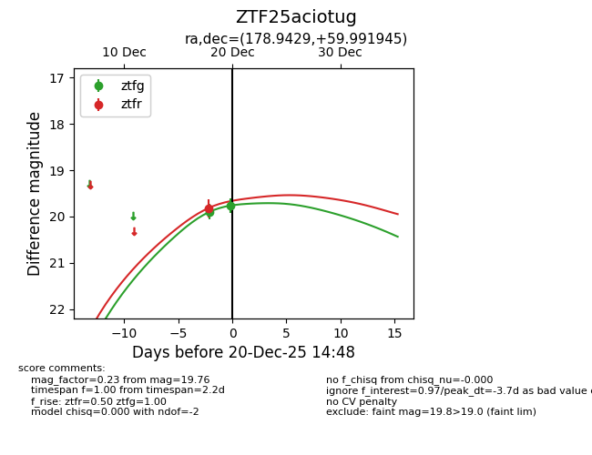
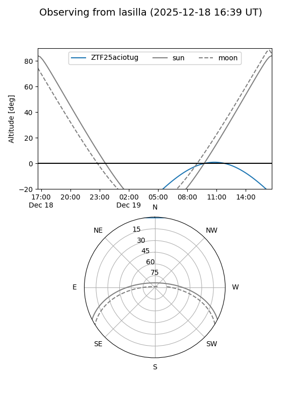
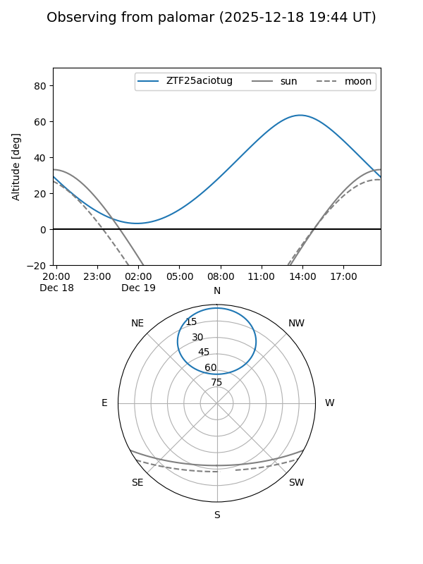
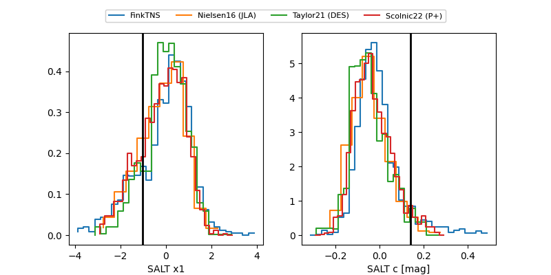

ZTF25aciotug
Target ZTF25aciotug at 2025-12-18 14:47
Aliases and brokers:
FINK: fink-portal.org/ZTF25aciotug
Lasair: lasair-ztf.lsst.ac.uk/objects/ZTF25aciotug
ALeRCE: alerce.online/object/ZTF25aciotug
alt names
ZTF25aciotug (ztf,fink_ztf)
Coordinates:
equatorial (ra, dec) = 178.9429,+59.99195
equatorial (HMS+DMS) = 11:55:46.29,+59:59:31.00
galactic (l, b) = (135.2826,+55.78147)
Photometry
last ztfg=19.90
1 ztfg detections
Lightcurve

Visibility


Additional plots
